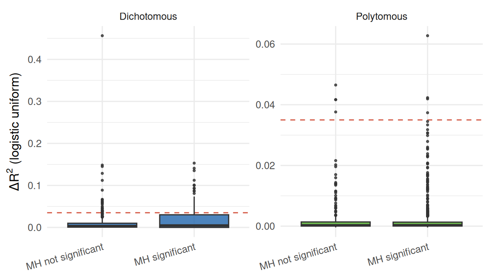
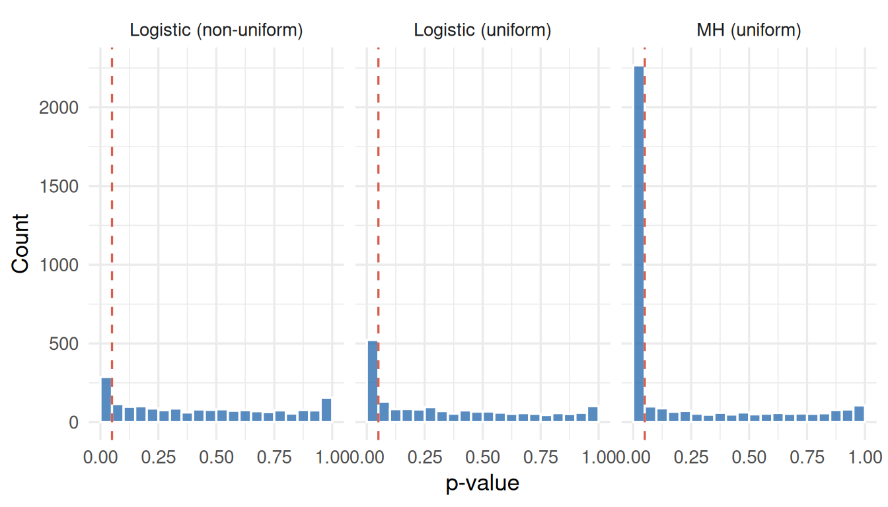
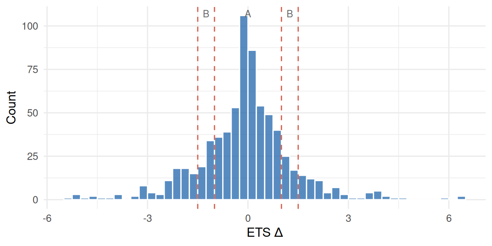
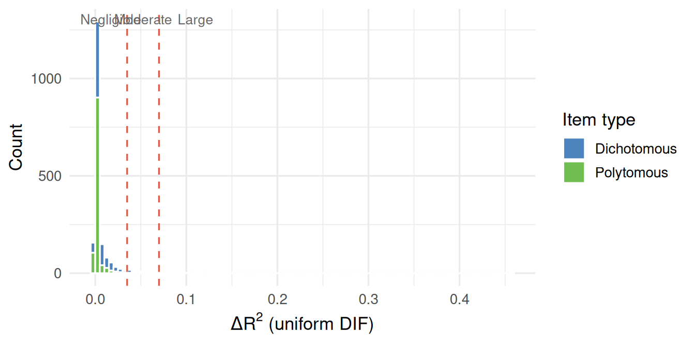

Code
library(irw)
candidates <- union(
irw_filter(var = "cov_gender"),
irw_filter(var = "cov_sex")
)An omnibus survey of differential item functioning (DIF) by gender or sex across all IRW datasets that record this covariate. We apply two DIF families — Mantel-Haenszel (uniform DIF, with ETS Δ effect sizes) and logistic regression (uniform and non-uniform DIF) — to each dataset and ask: how prevalent is gender DIF, and do the two methods agree?
This vignette — including the dataset search, the compute script, the analysis design, and the writing below — was produced largely by Claude (Anthropic), working from a task specification and with human review. Treat the methodological choices and interpretations accordingly, and check the compute script (gender_dif_compute.R) directly if you’re relying on the numbers here.
Differential item functioning (DIF) occurs when an item is systematically easier or harder for one group than another, after controlling for the underlying trait. Gender is one of the most commonly examined group variables in educational and psychological measurement, yet most DIF studies target a single instrument. The IRW makes a broader question tractable: how prevalent is gender DIF across a diverse collection of real-world datasets? And do two complementary DIF methods agree on which items are flagged?
We identified all IRW datasets that record a cov_gender or cov_sex covariate using irw_filter(), which also applies a default response-density filter (≥ 50%) to exclude sparse datasets unlikely to support stable estimation. Datasets with fewer than 6 items or fewer than 50 respondents per group are excluded.
The initial search found 459 candidate datasets. After filtering, 181 datasets are included here.
For each dataset we:
| Family | Dichotomous | Polytomous | Detects |
|---|---|---|---|
| Mantel-Haenszel | difR::difMH |
difR::difGMH |
Uniform DIF only |
| Logistic regression | difR::difLogistic |
difR::difPolyLogistic |
Uniform + non-uniform DIF |
The MH family (Holland and Thayer 1988) uses total score as the matching criterion and produces the ETS Δ effect size (= −2.35 × ln α̂MH) for dichotomous items (Holland and Thayer 1985): |Δ| < 1 negligible (A), 1–1.5 moderate (B), > 1.5 large (C). The logistic family fits ordinal regression models per item and decomposes DIF into a uniform component (group main effect) and a non-uniform component (group × score interaction).
The full compute script is at vignettes/gender_dif_compute.R.
181 datasets are included in this analysis (DIF counts use α = 0.05, uncorrected).
ds_summary |>
select(dataset, n_persons, n_items, is_poly, group_col, ref, focal,
n_mh_sig, n_unif_sig, n_nonunif_sig) |>
rename(
Dataset = dataset,
N = n_persons,
Items = n_items,
Polytomous = is_poly,
`Group col` = group_col,
Reference = ref,
Focal = focal,
`DIF (MH)` = n_mh_sig,
`DIF (unif)` = n_unif_sig,
`DIF (non-unif)` = n_nonunif_sig
)| Dataset | N | Items | Polytomous | Group col | Reference | Focal | DIF (MH) | DIF (unif) | DIF (non-unif) |
|---|---|---|---|---|---|---|---|---|---|
| ai_fear_dong_2026_incentive | 1000 | 48 | FALSE | cov_gender | 1 | 0 | 48 | 0 | 0 |
| ai_fear_dong_2026_own_fear | 5000 | 48 | TRUE | cov_gender | 1 | 0 | 32 | NA | NA |
| ai_fear_dong_2026_requirement | 5000 | 48 | TRUE | cov_gender | 1 | 0 | 37 | NA | NA |
| amatus_cipora_2024_arithmetic | 1106 | 40 | FALSE | cov_sex | f | m | 8 | 13 | 21 |
| amatus_cipora_2024_bfi_n | 1106 | 8 | TRUE | cov_sex | f | m | 8 | 2 | 0 |
| amatus_cipora_2024_gad | 1106 | 7 | TRUE | cov_sex | f | m | 7 | 1 | 0 |
| amatus_cipora_2024_pisa_me | 1106 | 6 | TRUE | cov_sex | f | m | 6 | 3 | 3 |
| amorim_2025_climej_climej | 1196 | 51 | TRUE | cov_gender | 0 | 2 | 51 | NA | NA |
| amorim_2025_climej_desenhonotrabalho | 1196 | 17 | TRUE | cov_gender | 0 | 2 | 17 | 6 | 2 |
| amorim_2025_climej_suporteorganizacional | 1196 | 9 | TRUE | cov_gender | 0 | 2 | 9 | 3 | 1 |
| anunciacao_2025_emotional_management | 5000 | 9 | TRUE | cov_sex | masculino | feminino | 9 | 7 | 3 |
| anunciacao_2025_emotional_relationships | 5000 | 10 | TRUE | cov_sex | masculino | feminino | 10 | 7 | 7 |
| anunciacao_2025_emotional_responsibility | 5000 | 8 | TRUE | cov_sex | masculino | feminino | 6 | 6 | 1 |
| anunciacao_2025_emotional_social-awareness | 5000 | 8 | TRUE | cov_sex | masculino | feminino | 8 | 3 | 2 |
| anunciacao_2025_personality_affiliation | 5000 | 9 | TRUE | cov_sex | M | F | 9 | 6 | 8 |
| anunciacao_2025_personality_autonomy | 5000 | 9 | TRUE | cov_sex | M | F | 9 | 4 | 1 |
| anunciacao_2025_personality_change | 5000 | 7 | TRUE | cov_sex | M | F | 7 | 6 | 6 |
| anunciacao_2025_personality_dominance | 5000 | 7 | TRUE | cov_sex | M | F | 7 | 2 | 2 |
| anunciacao_2025_personality_exhibition | 5000 | 9 | TRUE | cov_sex | M | F | 9 | 5 | 2 |
| anunciacao_2025_personality_intraception | 5000 | 7 | TRUE | cov_sex | M | F | 7 | 5 | 3 |
| anunciacao_2025_personality_order | 5000 | 6 | TRUE | cov_sex | M | F | 6 | 3 | 1 |
| anunciacao_2025_personality_persistence | 5000 | 8 | TRUE | cov_sex | M | F | 8 | 6 | 0 |
| anunciacao_2025_personality_succorance | 5000 | 7 | TRUE | cov_sex | M | F | 7 | 5 | 6 |
| assessment_time_fournier_2025_bscs | 394 | 13 | TRUE | cov_gender | Woman | Man | 13 | 6 | 1 |
| assessment_time_fournier_2025_gad | 394 | 7 | TRUE | cov_gender | Woman | Man | 2 | 2 | 0 |
| assessment_time_fournier_2025_phq | 394 | 9 | TRUE | cov_gender | Woman | Man | 1 | 1 | 2 |
| assessment_time_fournier_2025_upps | 394 | 20 | TRUE | cov_gender | Woman | Man | 20 | 5 | 1 |
| autism_blotner_2025_s1_bes | 528 | 20 | TRUE | cov_sex | 2 | 1 | 20 | 10 | 6 |
| autism_blotner_2025_s1_tactics | 528 | 6 | TRUE | cov_sex | 2 | 1 | 6 | 2 | 1 |
| autism_blotner_2025_s2_acme | 527 | 36 | TRUE | cov_sex | 2 | 1 | 36 | NA | NA |
| autism_blotner_2025_s2_aq | 527 | 10 | TRUE | cov_sex | 2 | 1 | 10 | 4 | 1 |
| bfi_goldberg_1992_extraversion | 5000 | 10 | TRUE | cov_gender | 2 | 1 | 10 | 5 | 4 |
| bfi_goldberg_1992_openness_to_experience | 5000 | 10 | TRUE | cov_gender | 2 | 1 | 10 | 6 | 1 |
| brand_raffaelli_2024_liking_20 | 651 | 50 | TRUE | cov_gender | Female | 1 | 50 | NA | NA |
| cf_kay_2025 | 486 | 11 | TRUE | cov_gender | Man | Woman | 11 | 6 | 1 |
| chile_2023_children-adolescents-survey_aa | 5000 | 37 | TRUE | cov_gender | Hombre | Mujer | 15 | NA | NA |
| chile_2023_children-adolescents-survey_cp_a | 5000 | 27 | FALSE | cov_gender | Mujer | Hombre | 13 | 0 | 0 |
| chile_2023_children-adolescents-survey_cp_c | 5000 | 42 | TRUE | cov_gender | Mujer | Hombre | 33 | NA | NA |
| chile_2023_children-adolescents-survey_g | 5000 | 8 | TRUE | cov_gender | Hombre | Mujer | 8 | 6 | 1 |
| chile_2023_children-adolescents-survey_k | 5000 | 28 | TRUE | cov_gender | Hombre | Mujer | 25 | NA | NA |
| chile_2023_children-adolescents-survey_n | 5000 | 41 | TRUE | cov_gender | Hombre | Mujer | 20 | NA | NA |
| climatechange_geiger_2025 | 3653 | 14 | TRUE | cov_gender | 0 | 1 | 8 | 8 | 2 |
| curiosity_stone_2022_invol | 247 | 12 | TRUE | cov_sex | Female | Male | 6 | 2 | 2 |
| curiosity_stone_2022_var | 247 | 8 | TRUE | cov_sex | Female | Male | 4 | 1 | 0 |
| DART_Brysbaert_2020_1 | 199 | 51 | FALSE | cov_gender | Vrouw | Man | 4 | 5 | 7 |
| ders16_xiong_2025 | 5000 | 16 | TRUE | cov_gender | 1 | 0 | 16 | 8 | 15 |
| difnlr_msatb | 1407 | 20 | FALSE | cov_gender | 1 | 0 | 2 | 2 | 0 |
| dinic_2025_shortdarktriad | 5000 | 27 | TRUE | cov_gender | Female | Male | 27 | NA | NA |
| dscore_barrera_weber_2019 | 608 | 21 | FALSE | cov_gender | Female | Male | 0 | 0 | 1 |
| dscore_denver_weber_2019 | 676 | 46 | FALSE | cov_gender | Male | Female | 0 | 8 | 9 |
| dscore_mds_weber_2019 | 216 | 6 | FALSE | cov_gender | Male | Female | 2 | 0 | 0 |
| dscore_sbi_weber_2019 | 203 | 31 | FALSE | cov_gender | Female | Male | 0 | 1 | 4 |
| dvivdtws_ppmial_marcatto_2023_cwb | 404 | 22 | TRUE | cov_gender | NA | 0 | 21 | NA | NA |
| dvivdtws_ppmial_marcatto_2023_ocs | 404 | 22 | TRUE | cov_gender | NA | 0 | 21 | NA | NA |
| dvivdtws_ppmial_marcatto_2023_snaq | 404 | 22 | TRUE | cov_gender | NA | 0 | 21 | NA | NA |
| dwyer_2025_genomics_gec | 334 | 7 | TRUE | cov_gender | Male | Masculino | 7 | 1 | 0 |
| dwyer_2025_genomics_os | 335 | 6 | TRUE | cov_gender | Male | Masculino | 3 | 0 | 0 |
| dwyer_2025_genomics_pb | 335 | 9 | TRUE | cov_gender | Male | Masculino | 8 | 0 | 0 |
| dwyer_2025_genomics_pc | 335 | 8 | TRUE | cov_gender | Male | Masculino | 8 | 0 | 0 |
| ecps_sahm_2024_ia | 5000 | 7 | TRUE | cov_gender | Female | Male | 6 | 6 | 6 |
| ecps_sahm_2024_moral | 5000 | 11 | TRUE | cov_gender | Female | Male | 8 | 9 | 8 |
| ecps_sahm_2024_stress | 5000 | 26 | TRUE | cov_gender | Female | Male | 15 | NA | NA |
| ecps_sahm_2024_trust | 5000 | 7 | TRUE | cov_gender | Female | Male | 2 | 4 | 2 |
| ecps_sahm_2024_vaccine | 5000 | 7 | TRUE | cov_gender | Female | Male | 2 | 2 | 2 |
| EEEDPRM_Bulut_2021 | 961 | 10 | TRUE | cov_gender | Female | Male | 2 | 4 | 1 |
| envirisk_lalot_2025 | 1980 | 12 | TRUE | cov_gender | 1 | 2 | 12 | 10 | 1 |
| erf_breuer_2017_dosp | 376 | 9 | TRUE | cov_gender | 1 | 2 | 9 | 4 | 2 |
| FAD_fadplus_goto2021 | 792 | 51 | TRUE | cov_gender | 2 | 1 | 51 | NA | NA |
| FomoNegativeAffect_cremer_2026_panas | 461 | 20 | TRUE | cov_sex | 2 | 1 | 20 | 8 | 0 |
| FomoNegativeAffect_cremer_2026_rrs | 459 | 10 | TRUE | cov_sex | 2 | 1 | 10 | 1 | 1 |
| GBJW_fadplus_goto2021 | 792 | 7 | TRUE | cov_gender | 2 | 1 | 7 | 1 | 1 |
| gcbs_brotherton_2013_tipi | 2359 | 10 | TRUE | cov_gender | 1 | 2 | 10 | 5 | 0 |
| gcbs_brotherton_2013 | 2359 | 15 | TRUE | cov_gender | 1 | 2 | 15 | 12 | 7 |
| genpsych_russell_2024_gemma | 989 | 28 | TRUE | cov_gender | Female | Male | 17 | NA | NA |
| genpsych_russell_2024_gpt4o | 985 | 35 | TRUE | cov_gender | Female | Male | 27 | NA | NA |
| genpsych_russell_2024_llama3 | 974 | 30 | TRUE | cov_gender | Female | Male | 17 | NA | NA |
| genpsych_russell_2024_mixtral | 976 | 32 | TRUE | cov_gender | Female | Male | 19 | NA | NA |
| guatemala_2024_homes_drainage | 5000 | 7 | TRUE | cov_sex | 1 | 2 | 0 | 0 | 0 |
| guatemala_2024_homes_emergencies | 5000 | 8 | TRUE | cov_sex | 1 | 2 | 7 | 0 | 2 |
| guatemala_2024_homes_energy | 5000 | 6 | TRUE | cov_sex | 1 | 2 | 1 | 0 | 1 |
| guatemala_2024_homes_lighting | 5000 | 6 | TRUE | cov_sex | 1 | 2 | 0 | 0 | 1 |
| guatemala_2024_homes_safety | 5000 | 8 | TRUE | cov_sex | 1 | 2 | 8 | 2 | 1 |
| guatemala_2024_homes_transparency | 5000 | 20 | TRUE | cov_sex | 1 | 2 | 4 | 3 | 0 |
| heise_2024_mental_falsebel | 204 | 12 | TRUE | cov_sex | M | F | 2 | 5 | 0 |
| heise_2024_mental_falsesign | 204 | 12 | TRUE | cov_sex | M | F | 1 | 0 | 1 |
| heise_2024_mental_knowexpert | 204 | 6 | TRUE | cov_sex | M | F | 1 | 1 | 0 |
| hexaco_silvia_2025 | 530 | 51 | TRUE | cov_gender | Male | Female | 44 | NA | NA |
| ilearnathome_regalado_2025 | 909 | 15 | TRUE | cov_gender | 1 | 2 | 15 | 4 | 4 |
| ipip_openpsychometrics_ad | 995 | 10 | TRUE | cov_gender | 1 | 2 | 10 | 3 | 0 |
| ipip_openpsychometrics_as | 999 | 10 | TRUE | cov_gender | 1 | 2 | 6 | 3 | 0 |
| ipip_openpsychometrics_do | 996 | 10 | TRUE | cov_gender | 1 | 2 | 7 | 2 | 0 |
| ipq_doglioni_2021 | 408 | 51 | TRUE | cov_sex | 0 | 1 | 32 | NA | NA |
| johansson-swedish-pss-rasch-analysis-2024 | 793 | 14 | TRUE | cov_gender | 1 | 2 | 10 | 7 | 0 |
| Karim2022_tmoca_subscales_single | 233 | 16 | TRUE | cov_gender | 2 | 1 | 6 | 0 | 0 |
| kepaq_balparda_2021 | 386 | 16 | TRUE | cov_sex | 1 | 2 | 2 | 1 | 5 |
| lhsbrasil_couto_2023_pss | 461 | 10 | TRUE | cov_gender | 2 | 1 | 5 | 0 | 2 |
| lys_2020_rape_3_asi | 376 | 22 | TRUE | cov_gender | Female | Male | 8 | NA | NA |
| lys_2020_rape_3_rma | 429 | 19 | TRUE | cov_gender | Female | Male | 17 | 3 | 2 |
| lys_2020_rape_3_sds | 366 | 29 | FALSE | cov_gender | Female | Male | 3 | 3 | 1 |
| lys_2020_rape_3_unjust | 389 | 10 | TRUE | cov_gender | Female | Male | 9 | 2 | 1 |
| machivallianism_test_main | 5000 | 20 | TRUE | cov_gender | 1 | 2 | 20 | 20 | 5 |
| margaretto_2025_translation_study_1_generalknowledge | 188 | 49 | FALSE | cov_gender | Male | Female | 10 | 13 | 2 |
| margaretto_2025_translation_study_1_lextale | 208 | 33 | FALSE | cov_gender | Male | Female | 2 | 3 | 1 |
| margaretto_2025_translation_study_1_vocabulary_1 | 209 | 40 | FALSE | cov_gender | Male | Female | 6 | 6 | 3 |
| margaretto_2025_translation_study_1_vocabulary_2 | 224 | 44 | FALSE | cov_gender | Male | Female | 4 | 6 | 2 |
| margaretto_2025_translation_study_1_vocabulary_3 | 211 | 41 | FALSE | cov_gender | Male | Female | 3 | 5 | 5 |
| margaretto_2025_translation_study_2_generalknowledge_2 | 207 | 51 | FALSE | cov_gender | Female | Male | 7 | 10 | 10 |
| margaretto_2025_translation_study_2_lextale | 210 | 19 | FALSE | cov_gender | Female | Male | 1 | 4 | 2 |
| metacogmonitoring_double2025 | 300 | 51 | TRUE | cov_sex | Male | Female | 41 | NA | NA |
| mexico_2023_quality_confidence | 5000 | 25 | TRUE | cov_sex | 2 | 1 | 12 | NA | NA |
| mexico_2023_quality_problems | 5000 | 12 | FALSE | cov_sex | 2 | 1 | 3 | 6 | 1 |
| mexico_2024_q1safety_govperformance | 5000 | 19 | TRUE | cov_sex | 2 | 1 | 8 | 7 | 1 |
| mexico_2024_q1safety_perception | 5000 | 51 | TRUE | cov_sex | 2 | 1 | 36 | NA | NA |
| mexico_2024_q2safety_govperformance | 5000 | 23 | TRUE | cov_sex | 2 | 1 | 13 | NA | NA |
| mexico_2024_q3safety_perception | 5000 | 50 | TRUE | cov_sex | 2 | 1 | 38 | NA | NA |
| mexico_2024_q3safety_violence | 5000 | 6 | FALSE | cov_sex | 2 | 1 | 6 | 0 | 0 |
| mexico_2024_q4safety_harassment | 5000 | 9 | FALSE | cov_sex | 2 | 1 | 6 | 0 | 0 |
| mexico_2024_q4safety_perception | 5000 | 51 | TRUE | cov_sex | 2 | 1 | 44 | NA | NA |
| mexico_2025_q2harassment | 5000 | 9 | FALSE | cov_sex | 2 | 1 | 9 | 0 | 0 |
| mexico_2025_q3safety_govperformance | 5000 | 18 | TRUE | cov_sex | 2 | 1 | 6 | 5 | 1 |
| mexico_2025_q3safety_perception | 5000 | 49 | TRUE | cov_sex | 2 | 1 | 37 | NA | NA |
| mexico_2025_q4safety_harassment | 5000 | 9 | FALSE | cov_sex | 2 | 1 | 8 | 0 | 0 |
| mgkt | 5000 | 32 | TRUE | cov_gender | 1 | 2 | 32 | NA | NA |
| much_tte_2025_actionorientation | 1229 | 12 | FALSE | cov_gender | male | female | 1 | 2 | 0 |
| narcissism_schneider_2025_study1_morf_hsns | 1285 | 10 | TRUE | cov_sex | 1 | 0 | 10 | 8 | 0 |
| nas_rogoza_2024_study2_nvs | 353 | 11 | TRUE | cov_gender | Male | Female | 11 | 3 | 0 |
| neurodegenerative_huizinga_2019_brief | 1294 | 51 | TRUE | cov_sex | 2 | 1 | 42 | NA | NA |
| neurodegenerative_huizinga_2019_cvc | 1416 | 16 | TRUE | cov_sex | 2 | 1 | 3 | 4 | 2 |
| neurodegenerative_huizinga_2019_dass | 1246 | 21 | TRUE | cov_sex | 2 | 1 | 1 | NA | NA |
| neurodegenerative_huizinga_2019_feda | 1311 | 27 | TRUE | cov_sex | 2 | 1 | 27 | NA | NA |
| neurodegenerative_huizinga_2019_vfq | 1372 | 29 | TRUE | cov_sex | 2 | 1 | 10 | NA | NA |
| nfc_kay_2025 | 486 | 7 | TRUE | cov_gender | Man | Woman | 7 | 0 | 0 |
| oxfordcovid_xue_2024_pswq_a | 499 | 16 | TRUE | cov_gender | 1 | 2 | 16 | 9 | 5 |
| oxfordcovid_xue_2024_pswq_c | 1192 | 14 | TRUE | cov_gender | 1 | 2 | 14 | 4 | 3 |
| pechorro_impulsivity_2021_bes | 429 | 7 | TRUE | cov_sex | 1 | 0 | 6 | 0 | 1 |
| pezzuti_2025_coolpeople_benevolent | 3950 | 6 | TRUE | cov_gender | Male | Female | 6 | 3 | 0 |
| pezzuti_2025_coolpeople_main_big5_SouthKorea | 266 | 9 | TRUE | cov_gender | Female | Male | 9 | 0 | 1 |
| pezzuti_2025_coolpeople_main_collectivism_Mexico_Chile | 454 | 6 | TRUE | cov_gender | Male | Female | 6 | 0 | 0 |
| pezzuti_2025_coolpeople_main_collectivism_USA | 844 | 8 | TRUE | cov_gender | Female | Male | 8 | 4 | 1 |
| pezzuti_2025_coolpeople_main_individualism_USA | 844 | 8 | TRUE | cov_gender | Female | Male | 8 | 6 | 1 |
| pezzuti_2025_coolpeople_main_materialism_Chile | 204 | 18 | TRUE | cov_gender | Male | Female | 18 | 3 | 0 |
| pezzuti_2025_coolpeople_single-items | 3950 | 10 | TRUE | cov_gender | Male | Female | 9 | 5 | 0 |
| phq9_xiong_2025 | 5000 | 9 | TRUE | cov_gender | 1 | 0 | 6 | 5 | 2 |
| previc_bohn2023 | 1190 | 51 | FALSE | cov_sex | m | f | 14 | 15 | 4 |
| prpt_hellmann_2021_fearofcrime | 1410 | 10 | TRUE | cov_gender | 1 | 2 | 10 | 6 | 2 |
| prpt_hellmann_2021_realisticthreat | 1410 | 21 | TRUE | cov_gender | 1 | 2 | 21 | NA | NA |
| prpt_hellmann_2021_threat | 1409 | 15 | TRUE | cov_gender | 1 | 2 | 15 | 12 | 7 |
| qol_islam_2025 | 1147 | 26 | TRUE | cov_sex | 0 | 1 | 26 | NA | NA |
| quopl2_forster_2021_cft | 332 | 50 | FALSE | cov_sex | 0 | 1 | 1 | 2 | 6 |
| quopl2_forster_2021_dmat | 332 | 32 | FALSE | cov_sex | 0 | 1 | 0 | 3 | 1 |
| randomness_angelike_2024_ncs | 834 | 6 | TRUE | cov_gender | 2 | 1 | 6 | 3 | 0 |
| rdatasets_gssabortion | 5000 | 7 | FALSE | cov_gender | Female | Male | 2 | 1 | 2 |
| rmet_higgins_2022_rmet | 1222 | 37 | TRUE | cov_gender | 2 | 1 | 37 | NA | NA |
| rodas_2026_stait_trait_anxiety | 1244 | 40 | TRUE | cov_sex | female | male | 15 | NA | NA |
| Rosenberg_fadplus_goto2021 | 792 | 10 | TRUE | cov_gender | 2 | 1 | 10 | 0 | 1 |
| scs_2025_cfanonclinic | 545 | 12 | TRUE | cov_gender | 1 | 2 | 12 | 4 | 1 |
| sd3ypl_klimczak_2019_bfq | 325 | 51 | TRUE | cov_gender | 2 | 1 | 51 | NA | NA |
| sd3ypl_klimczak_2019_bpqa | 325 | 29 | TRUE | cov_gender | 2 | 1 | 29 | NA | NA |
| sd3ypl_klimczak_2019_sd3 | 730 | 26 | TRUE | cov_gender | 2 | 1 | 22 | NA | NA |
| sd3ypl_klimczak_2019_ses | 325 | 10 | TRUE | cov_gender | 2 | 1 | 10 | 1 | 5 |
| sd4_silvia_2025 | 530 | 28 | TRUE | cov_gender | Male | Female | 27 | NA | NA |
| shorttripm_silvia_2025 | 1145 | 15 | TRUE | cov_gender | Male | Female | 13 | 6 | 6 |
| shu_2025_translation_eib | 1054 | 7 | TRUE | cov_gender | Female | Male | 7 | 3 | 1 |
| shu_2025_translation_mcpis | 1054 | 9 | TRUE | cov_gender | Female | Male | 9 | 2 | 1 |
| silvia_2024_funny | 1842 | 8 | TRUE | cov_gender | 1 | 0 | 4 | 2 | 1 |
| singh_2025_identity_irs | 1436 | 10 | TRUE | cov_gender | Female | Male | 8 | 4 | 3 |
| sned_bendall_2024 | 785 | 6 | TRUE | cov_gender | Female | Male | 6 | 0 | 0 |
| socialstereotype_hughes_2025_personality_self | 290 | 28 | TRUE | cov_sex | 0 | 1 | 24 | NA | NA |
| spq_kay_2025 | 486 | 7 | TRUE | cov_gender | Man | Woman | 7 | 2 | 1 |
| suicide_reinbergs_2025_ghsq | 1207 | 9 | TRUE | cov_gender | 1 | 2 | 7 | 6 | 1 |
| suicide_reinbergs_2025_soss | 1208 | 8 | TRUE | cov_gender | 1 | 2 | 8 | 0 | 7 |
| suicide_reinbergs_2025_stig | 1207 | 9 | TRUE | cov_gender | 1 | 2 | 7 | 2 | 0 |
| suicide_reinbergs_2025_stosa | 1208 | 12 | TRUE | cov_gender | 1 | 2 | 12 | 2 | 1 |
| test_taking_much_2025_ct | 1229 | 9 | FALSE | cov_gender | male | female | 0 | 0 | 0 |
| test_taking_much_2025_ef | 1229 | 10 | TRUE | cov_gender | male | female | 10 | 3 | 2 |
| wang_onlineriskexp_2025_interpersonalsecurity | 986 | 18 | FALSE | cov_gender | 2 | 1 | 6 | 7 | 1 |
| wang_onlineriskexp_2025 | 986 | 16 | TRUE | cov_gender | 2 | 1 | 16 | 6 | 4 |
| williams-brat2020_study1 | 206 | 21 | TRUE | cov_gender | 2 | 1 | 4 | NA | NA |
| williams-brat2020-study2 | 229 | 21 | TRUE | cov_gender | 2 | 1 | 2 | NA | NA |
| williams-cps2019 | 361 | 21 | TRUE | cov_gender | 2 | 1 | 5 | NA | NA |
| xue_2024_full_dataset | 136 | 19 | TRUE | cov_gender | Female | Male | 1 | 2 | 0 |
level_order <- ds_summary |> arrange(prop_mh) |> pull(short_name)
plot_df <- ds_summary |>
pivot_longer(
cols = c(prop_mh, prop_unif, prop_nonunif),
names_to = "method",
values_to = "prop_dif"
) |>
mutate(
method = recode(method,
prop_mh = "MH",
prop_unif = "Logistic (uniform)",
prop_nonunif = "Logistic (non-uniform)"
),
method = factor(method, levels = names(pal)),
short_name = factor(short_name, levels = level_order),
n_sig = case_when(
method == "MH" ~ n_mh_sig,
method == "Logistic (uniform)" ~ n_unif_sig,
method == "Logistic (non-uniform)"~ n_nonunif_sig
),
tooltip = paste0(
"Dataset: ", dataset, "<br>",
"Method: ", method, "<br>",
"DIF items: ", n_sig, " / ", n_items, "<br>",
"N: ", scales::comma(n_persons)
)
)
p <- ggplot(plot_df, aes(
x = prop_dif, y = short_name, colour = method, text = tooltip
)) +
geom_point(size = 2.5, alpha = 0.85, position = position_dodge(width = 0.5)) +
scale_x_continuous(labels = scales::percent_format(), limits = c(0, 1.05)) +
scale_colour_manual(values = pal, name = "Method") +
labs(x = "Proportion of items with DIF", y = NULL) +
theme(
panel.grid.major.y = element_line(colour = "grey92"),
axis.text.y = element_blank()
)
ggplotly(p, tooltip = "text") |>
layout(
yaxis = list(showticklabels = FALSE),
annotations = list(list(
text = "α = 0.05 (uncorrected). Hover for item counts and sample size.",
showarrow = FALSE, xref = "paper", yref = "paper",
x = 0, y = -0.1, xanchor = "left", yanchor = "top",
font = list(size = 11, color = "grey50")
))
)bind_rows(
items_df |> summarise(method = "MH (uniform)",
Datasets = n_distinct(dataset), `Total items` = n(),
`DIF items` = sum(p_mh < 0.05, na.rm = TRUE),
`DIF rate` = scales::percent(mean(p_mh < 0.05, na.rm = TRUE), accuracy = 0.1)),
items_df |> summarise(method = "Logistic (uniform)",
Datasets = n_distinct(dataset), `Total items` = n(),
`DIF items` = sum(p_unif < 0.05, na.rm = TRUE),
`DIF rate` = scales::percent(mean(p_unif < 0.05, na.rm = TRUE), accuracy = 0.1)),
items_df |> summarise(method = "Logistic (non-uniform)",
Datasets = n_distinct(dataset), `Total items` = n(),
`DIF items` = sum(p_nonunif < 0.05, na.rm = TRUE),
`DIF rate` = scales::percent(mean(p_nonunif < 0.05, na.rm = TRUE), accuracy = 0.1))
) |> rename(Method = method)| Method | Datasets | Total items | DIF items | DIF rate |
|---|---|---|---|---|
| MH (uniform) | 181 | 3544 | 2267 | 64.6% |
| Logistic (uniform) | 181 | 3544 | 522 | 27.8% |
| Logistic (non-uniform) | 181 | 3544 | 287 | 15.3% |
DIF is real and common by both methods, and the IRW’s scale makes this a uniquely broad cross-domain baseline — gender DIF is not confined to a few pathological instruments. But the logistic non-uniform component (group × score interaction) flags noticeably fewer items than either uniform measure, consistent with the broader measurement literature: most gender DIF found here looks like a uniform difficulty shift rather than a slope difference.
A central finding of this analysis is that MH significance and ΔR² effect size can come apart dramatically, particularly for polytomous items. Many datasets show MH flagging rates near 100% while their median ΔR² stays in negligible territory (< 0.035). This reflects a known limitation of Mantel-Haenszel for polytomous scales: when groups differ substantially on the underlying trait mean, the total-score matching criterion is contaminated and the GMH statistic accumulates to near-zero p-values for every item — even when per-item effect sizes are trivial. Datasets that land in the lower-right of the figure below exemplify this pattern. Datasets in the upper-right (high flag rate and large ΔR²) represent genuine widespread DIF.
div_df <- ds_summary |>
filter(!is.na(median_r2)) |>
mutate(
item_type = if_else(is_poly, "Polytomous", "Dichotomous"),
tooltip = paste0(
"Dataset: ", dataset, "<br>",
"Type: ", if_else(is_poly, "Polytomous", "Dichotomous"), "<br>",
"MH flagged: ", scales::percent(prop_mh, accuracy = 1), "<br>",
"Median ΔR²: ", round(median_r2, 4), "<br>",
"N: ", scales::comma(n_persons)
)
)
p_div <- ggplot(div_df, aes(x = prop_mh, y = median_r2,
colour = item_type, size = n_persons, text = tooltip)) +
geom_hline(yintercept = c(0.035, 0.07), linetype = "dashed", colour = "grey60") +
geom_point(alpha = 0.8) +
scale_x_continuous(labels = scales::percent_format(), limits = c(0, 1.05)) +
scale_colour_manual(values = c(Dichotomous = irw_blue, Polytomous = "#4dac26"),
name = "Item type") +
scale_size_continuous(range = c(3, 9), name = "N", guide = "none") +
labs(x = "Proportion of items flagged by MH (α = 0.05)",
y = "Median ΔR² (logistic uniform)")
# Threshold labels are added as native plotly annotations (xref = "paper") rather
# than a ggplot annotate() layer, which ggplotly() clips at the left panel edge.
ggplotly(p_div, tooltip = "text") |>
layout(annotations = list(
list(
text = "Negligible / Moderate", showarrow = FALSE,
xref = "paper", yref = "y", x = 0.01, y = 0.037,
xanchor = "left", yanchor = "bottom",
font = list(size = 11, color = "grey45")
),
list(
text = "Moderate / Large", showarrow = FALSE,
xref = "paper", yref = "y", x = 0.01, y = 0.072,
xanchor = "left", yanchor = "bottom",
font = list(size = 11, color = "grey45")
),
list(
text = "Point size = sample size. Hover for dataset details.",
showarrow = FALSE, xref = "paper", yref = "paper",
x = 0, y = -0.12, xanchor = "left", yanchor = "top",
font = list(size = 11, color = "grey50")
)
))The same pattern holds at the item level: MH-significant polytomous items cluster near zero on ΔR², while MH-significant dichotomous items span a wider effect-size range.
items_df |>
filter(!is.na(delta_r2_unif), !is.na(p_mh)) |>
mutate(
mh_sig = factor(if_else(p_mh < 0.05, "MH significant", "MH not significant"),
levels = c("MH not significant", "MH significant")),
item_type = if_else(is_poly, "Polytomous", "Dichotomous")
) |>
ggplot(aes(x = mh_sig, y = delta_r2_unif, fill = item_type)) +
geom_hline(yintercept = 0.035, linetype = "dashed", colour = "#d6604d") +
geom_boxplot(outlier.size = 0.8, alpha = 0.8) +
facet_wrap(~item_type, scales = "free_y") +
scale_fill_manual(values = c(Dichotomous = irw_blue, Polytomous = "#4dac26"),
guide = "none") +
labs(x = NULL, y = expression(Delta * R^2 ~ "(logistic uniform)")) +
theme(axis.text.x = element_text(angle = 15, hjust = 1))
Even where MH significance is high, the majority of items have ΔR² below 0.035 — the conventional “negligible” threshold (Jodoin and Gierl 2001). Datasets with genuinely large per-item effects (ΔR² > 0.07) are the exception. Read on its own, significance-only DIF reporting would inflate the apparent prevalence of meaningful gender bias.
Under the null (no DIF), p-values should be uniform. An excess of small p-values indicates systematic DIF. Comparing uniform and non-uniform distributions reveals whether DIF in this sample is primarily a difficulty shift or a slope difference.
items_df |>
pivot_longer(cols = c(p_mh, p_unif, p_nonunif),
names_to = "method", values_to = "p") |>
mutate(method = recode(method,
p_mh = "MH (uniform)",
p_unif = "Logistic (uniform)",
p_nonunif = "Logistic (non-uniform)"
)) |>
filter(!is.na(p)) |>
ggplot(aes(x = p)) +
geom_histogram(binwidth = 0.05, boundary = 0,
fill = irw_blue, colour = "white", alpha = 0.75) +
geom_vline(xintercept = 0.05, linetype = "dashed", colour = "#d6604d") +
facet_wrap(~method) +
labs(x = "p-value", y = "Count")
For dichotomous items the MH odds ratio translates to the ETS Δ scale (Holland and Thayer 1985), which classifies DIF severity: |Δ| < 1 = negligible (A), 1–1.5 = moderate (B), > 1.5 = large (C). Positive Δ means the item is harder for the focal group.
delta_df <- items_df |> filter(!is.na(delta_mh))
if (nrow(delta_df) > 0) {
ggplot(delta_df, aes(x = delta_mh)) +
geom_histogram(binwidth = 0.25, boundary = 0,
fill = irw_blue, colour = "white", alpha = 0.75) +
geom_vline(xintercept = c(-1.5, -1, 1, 1.5),
linetype = "dashed", colour = "#d6604d") +
annotate("text", x = c(-1.25, 0, 1.25), y = Inf,
label = c("B", "A", "B"), vjust = 1.5, size = 3.5, colour = "grey40") +
labs(x = "ETS Δ", y = "Count")
} else {
message("No dichotomous datasets in current results.")
}
The logistic regression approach produces a pseudo-R² difference (Zumbo 1999) for each item: the increase in model fit when a group term is added. This provides a sample-size-independent effect size for both dichotomous and polytomous items. Conventional cutoffs (Jodoin and Gierl 2001): < 0.035 negligible, 0.035–0.07 moderate, > 0.07 large.
r2_df <- items_df |>
filter("delta_r2_unif" %in% names(items_df)) |>
filter(!is.na(delta_r2_unif)) |>
mutate(item_type = if_else(is_poly, "Polytomous", "Dichotomous"))
if (nrow(r2_df) > 0) {
ggplot(r2_df, aes(x = delta_r2_unif, fill = item_type)) +
geom_histogram(binwidth = 0.005, boundary = 0,
colour = "white", alpha = 0.8, position = "stack") +
geom_vline(xintercept = c(0.035, 0.07),
linetype = "dashed", colour = "#d6604d") +
annotate("text", x = c(0.017, 0.0525, 0.11), y = Inf,
label = c("Negligible", "Moderate", "Large"),
vjust = 1.5, size = 3.5, colour = "grey40") +
scale_fill_manual(values = c(Dichotomous = irw_blue, Polytomous = "#4dac26"),
name = "Item type") +
labs(x = expression(Delta*R^2~"(uniform DIF)"), y = "Count")
} else {
message("delta_r2_unif not available — rerun compute script.")
}
All analyses use uncorrected α = 0.05; Benjamini-Hochberg correction within each dataset would reduce flagging rates. The GMH anticonservatism for polytomous items persists even with purification when group trait-mean differences are large — this is a fundamental limitation of total-score matching for polytomous data (Holland and Thayer 1988), not a tuning issue. Logistic ΔR² is the more reliable metric in those settings. For polytomous datasets with more than 20 items, difPolyLogistic was skipped due to computational cost; those datasets contribute MH results only.
More generally: this vignette reports statistical and effect-size measures of DIF, but doesn’t establish which flagged items are substantively meaningful for score interpretation in any given instrument, or attempt any correction for the fact that gender is only one of many possible DIF grouping variables IRW tables could support.
Results were computed on 2026-05-28 using 181 IRW tables. To reproduce:
The compute script writes one .rds file per dataset to vignettes/gender_dif_data/. Delete those files to force a fresh run. The vignette renders on whatever results are present — no need to wait for the full run to complete.